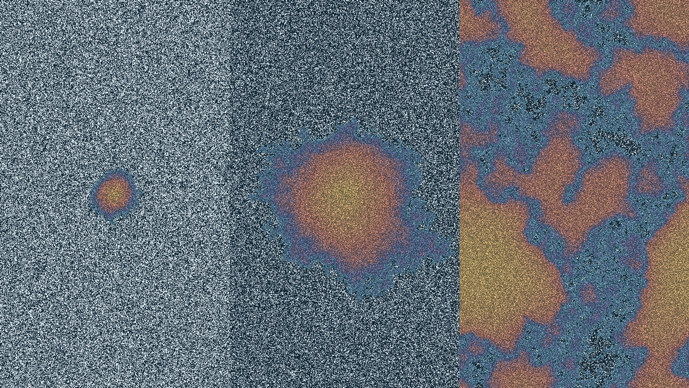
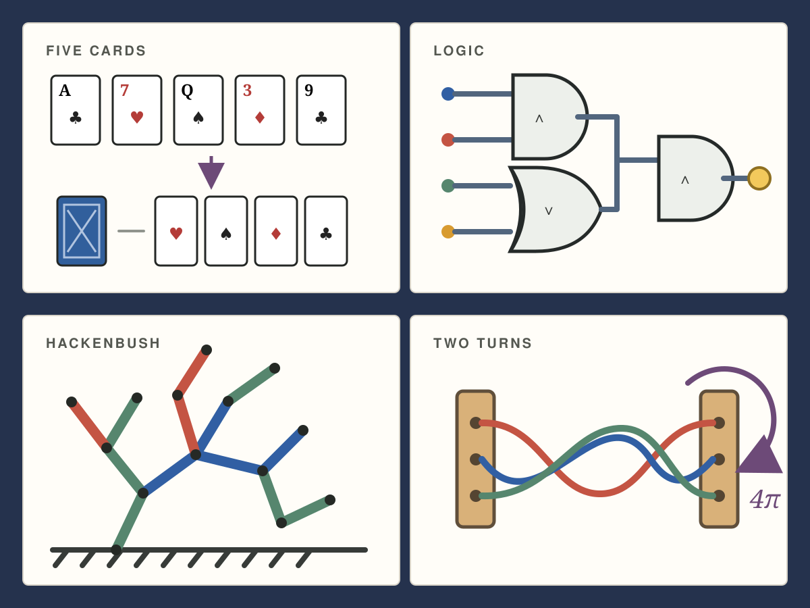
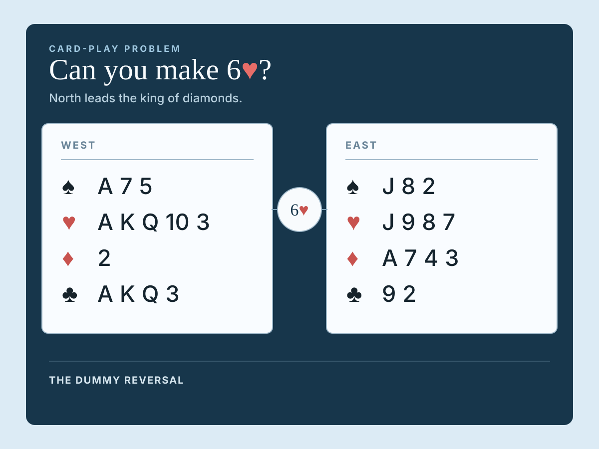

Jacob Richey
I am a postdoc in the math department at NYU Shanghai, working with Alejandro Ramirez. My research is on combinatorial probability, including models related to network science, statistical physics, dynamical systems, and machine learning.
From 2023–2026, I was a visiting researcher at the Alfréd Rényi Institute of Mathematics in Budapest. Previously, I was a postdoc in the probability group at the University of British Columbia.
Email: jfr9718 [at] nyu [dot] edu

Scroll for research, teaching, and other interests
Research in Probability and Combinatorics
My research focuses on discrete structures, usually from a probabilistic or combinatorial perspective. Recent topics include:
activated random walk and self-organized criticality, interacting particle systems, pattern avoidance and shifts of finite type,
random matrices, mixing times for stochastic diffusions, stochastic geometry.

Teaching & Mentoring
I am passionate about sharing mathematical ideas and puzzles with the people around me, including
students at all levels. Over the years I have collected many mathematical riddles, physical puzzles, and group activities
in fields like number theory, topology, algebra, and probability. I have a special place in my heart
for number theory and probability, which were my entry points to the world of mathematics as a youth.

Bridge
I am a recovering bridge addict. I played for the Dartmouth team from 2012-2014, and the University of Washington team from 2014-2016.
As a student, I wrote a practical bidding guide plus a collection of short, mildly comedic articles to teach rare
declarer situations and defensive techniques.
